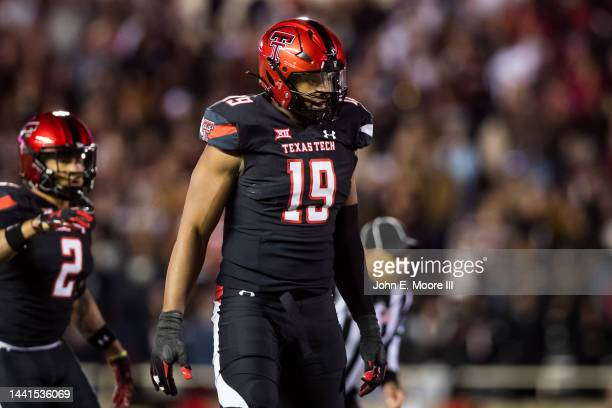

10 bold predictions one month out from the 2023 NFL draft
Written by Jeff Risdon March 27,2023
NFL Commissioner Roger Goodell during the NFL draft at Radio City Music Hall in New York,
NY on Saturday, April 28, 2007. (Photo by Richard Schultz/NFLPhotoLibrary)
We are exactly one month away from the start of the 2023 NFL draft in Kansas City. What exactly is going to
happen on April 27th-29th in the draft?
Those are mysteries, of course. We’ll find out in due time, but that won’t stop the speculation.
In that spirit, here are 10 quick, bold predictions on what will happen next month in the draft.
The No. 3 pick will be traded
GLENDALE, ARIZONA - SEPTEMBER 08: Quarterback Kyler Murray #1 of the Arizona Cardinals celebrates
after converting a two-point conversion against the Detroit Lions during the final moments of the second half of
the NFL game at State Farm Stadium on September 08, 2019 in Glendale, Arizona. The Lions and Cardinals tied 27-27.
(Photo by Christian Petersen/Getty Images)
The Arizona Cardinals are currently slated to make the No. 3 pick. They will not, however, make the pick at No. 3.
Arizona will trade the pick to a team looking to snag the best remaining quarterback on the board. The Cardinals
will get a first-round pick this year, along with a Day 2 pick and a player who can start right away in return.
5 QBs in the first round, and then a massive gap
INDIANAPOLIS, INDIANA - MARCH 04: CJ Stroud of Ohio State participates in a drill during the NFL
Combine at Lucas Oil Stadium on March 04, 2023 in Indianapolis, Indiana. (Photo by Stacy Revere/Getty Images)
There will be five quarterbacks taken in the first round.
C.J. Stroud
Bryce Young
Anthony Richardson
Will Levis
Hendon Hooker
After Hooker comes off the board, somewhere between 18 and 26 overall, there won’t be another QB selected until
the compensatory pick range of the third round.
Tyree Wilson goes ahead of Will Anderson

LUBBOCK, TEXAS - NOVEMBER 12: Defensive lineman Tyree Wilson #19 of the Texas Tech Red Raiders
stands on the field during the first half of the game against the Kansas Jayhawks at Jones AT&T Stadium on
November 12, 2022 in Lubbock, Texas. (Photo by John E. Moore III/Getty Images)
Much like a year ago when Travon Walker was selected No. 1 overall over more accomplished talents like Aidan
Hutchinson and Kayvon Thibodeaux, Texas Tech EDGE Tyree Wilson will be drafted before Alabama’s Will Anderson.
Wilson’s superior size and athletic traits will coax a higher pick than Anderson’s superior on-field production
in college.
Seattle won't make a pick in the 2nd round
LAS VEGAS, NEVADA - APRIL 28: Charles Cross poses onstage after being selected ninth by the
Seattle Seahawks during round one of the 2022 NFL Draft on April 28, 2022 in Las Vegas, Nevada. (Photo by David
Becker/Getty Images)
Right now, the Seattle Seahawks have four picks in the first 52 selections. Thanks to trades, the Seahawks are
slated to pick at 5, 20, 37 and 52.
The Seahawks will package 37 and 52 and jump into the back end of the first round to select Georgia TE Darnell
Washington.
Only 1 first-round wide receiver
PASADENA, CALIFORNIA - JANUARY 01: Jaxon Smith-Njigba #11 of the Ohio State Buckeyes catches a
touchdown pass against the Utah Utes during the fourth quarter in the Rose Bowl Game at Rose Bowl Stadium on
January 01, 2022 in Pasadena, California. (Photo by Sean M. Haffey/Getty Images)
The general consensus amongst draft analysts is that it’s not a high-end wide receiver class. That opinion will
be validated when just one wideout comes off the board on the draft’s first night. Ohio State’s Jaxon Smith-Njigba
will be the only first-round wide receiver.
Bijan Robinson will go in the top 10
AUSTIN, TEXAS - SEPTEMBER 10: Bijan Robinson #5 of the Texas Longhorns scores a touchdown in the
second quarter against the Alabama Crimson Tide at Darrell K Royal-Texas Memorial Stadium on September 10, 2022
in Austin, Texas. (Photo by Tim Warner/Getty Images)
Bijan Robinson is a very difficult player to forecast in terms of draft slotting. The Texas running back is almost
universally regarded as one of the five highest-rated players in the draft, but selecting a running back with such
a lofty draft position has become as out of fashion as white parachute pants.
Someone will bring back the running back into the top 10. Robinson is that good.
The 49ers bail on comp picks
CLEVELAND, OHIO - APRIL 29: Trey Lance walks onstage after being selected third by the San Francisco
49ers during round one of the 2021 NFL Draft at the Great Lakes Science Center on April 29, 2021 in Cleveland,
Ohio. (Photo by Gregory Shamus/Getty Images)
San Francisco earned three compensatory draft picks, No. 99, 101 and 102.
Much to the relief of everyone who covers the 49ers, GM John Lynch will package all three of those picks in various
trades and not make a single selection at the end of the third round.
Two former first-round picks will be traded on draft weekend
DETROIT, MICHIGAN - AUGUST 13: Jeff Okudah #23 of the Detroit Lions looks on before the preseason
game against the Buffalo Bills at Ford Field on August 13, 2021 in Detroit, Michigan. (Photo by Nic Antaya/Getty
Images)
Two recent first-round picks will find new homes during the draft weekend.
The Lions will move on from 2020 No. 3 overall pick Jeff Okudah. The oft-injured cornerback will be part of a
larger deal.
The same is true of Jaguars’ first-rounder from 2020, EDGE K’Lavon Chaisson. He was the No. 20 pick in that draft.
Neither player has been bad, but their time to prove themselves with their original team comes to an end.
4 kickers will hear their names called
SYRACUSE, NEW YORK - OCTOBER 29: Andre Szmyt #91 of the Syracuse Orange lines up to kick a field
goal during the third quarter against the Notre Dame Fighting Irish at JMA Wireless Dome on October 29, 2022 in
Syracuse, New York. (Photo by Bryan Bennett/Getty Images)
Drafting a kicker is not something most fanbases clamor for, and NFL teams are pretty strong in not poking that
bear. Only one kicker has been selected in each of the last two drafts. There haven’t been more than three kickers
selected in any year since 2012.
That changes in 2023. Four kickers will be drafted, all in the final two rounds:
Andre Szmyt, Syracuse
Jake Moody, Michigan
B.T. Potter, Clemson
Anders Carlson, Auburn
Two big names who fall in the draft
INDIANAPOLIS, INDIANA - MARCH 01: Defensive lineman Bryan Bresee of Clemson speaks with the media
during the NFL Combine at Lucas Oil Stadium on March 01, 2023 in Indianapolis, Indiana. (Photo by Justin
Casterline/Getty Images)
Two players who have been mainstays in the first round of mock drafts for months will not be selected in the top
31 (remember–Miami forfeited its first-rounder).
Clemson DT Bryan Bresee and Notre Dame TE Michael Mayer will each fall out of the first round. For Bresee, the
wait could be a much longer one than anticipated.
Draft Information:
The 2023 NFL Draft will be conducted from Thursday April 27th until Saturday April 29th in Kansas City, Missouri.
Picks will begin being made on Thursday at 8 p.m. ET, Friday at 7 p.m. ET and Saturday at 12 p.m. ET